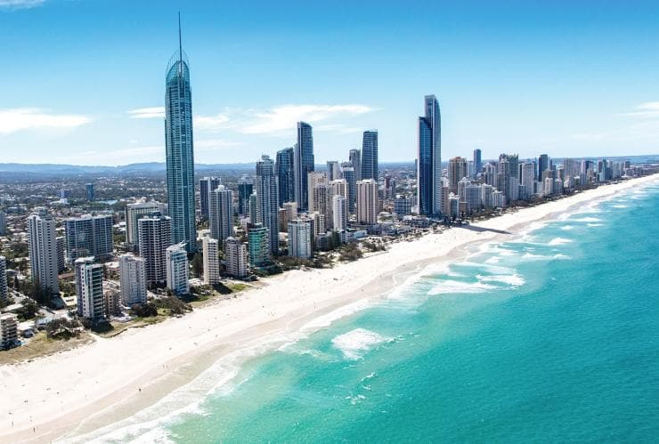
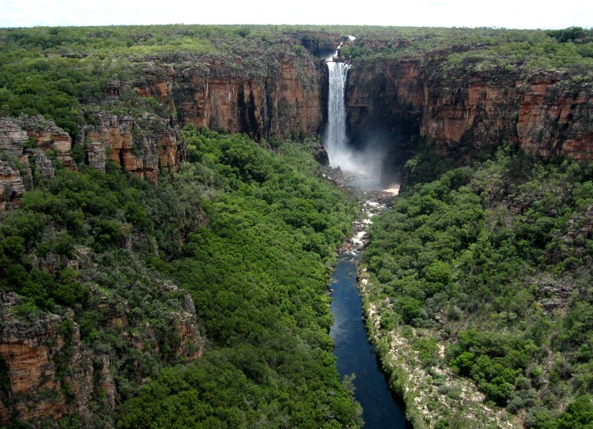
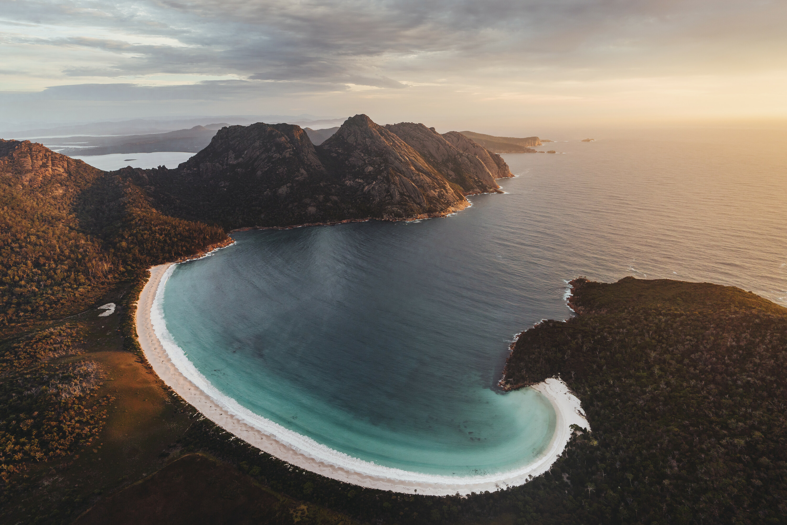
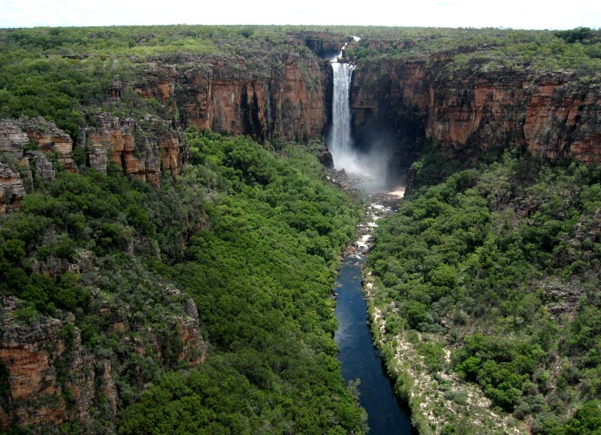
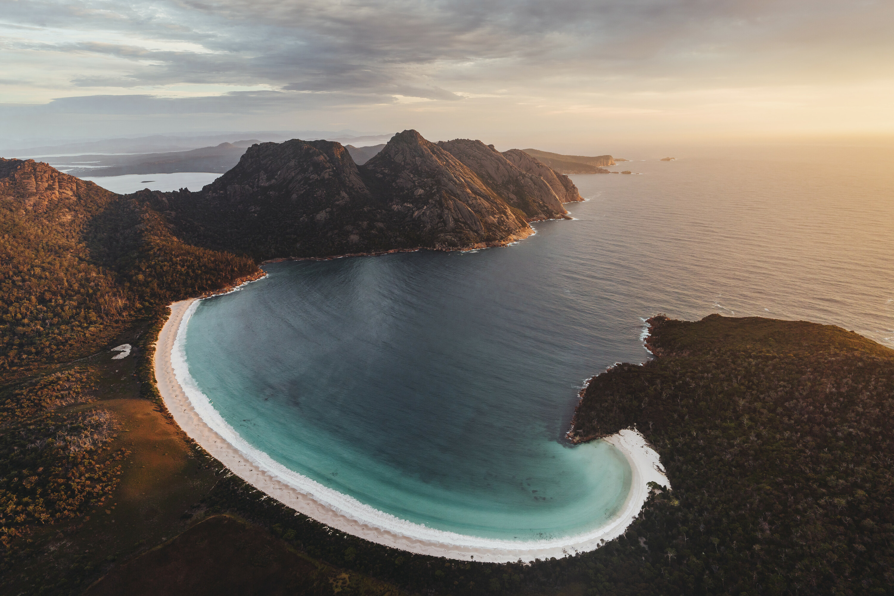
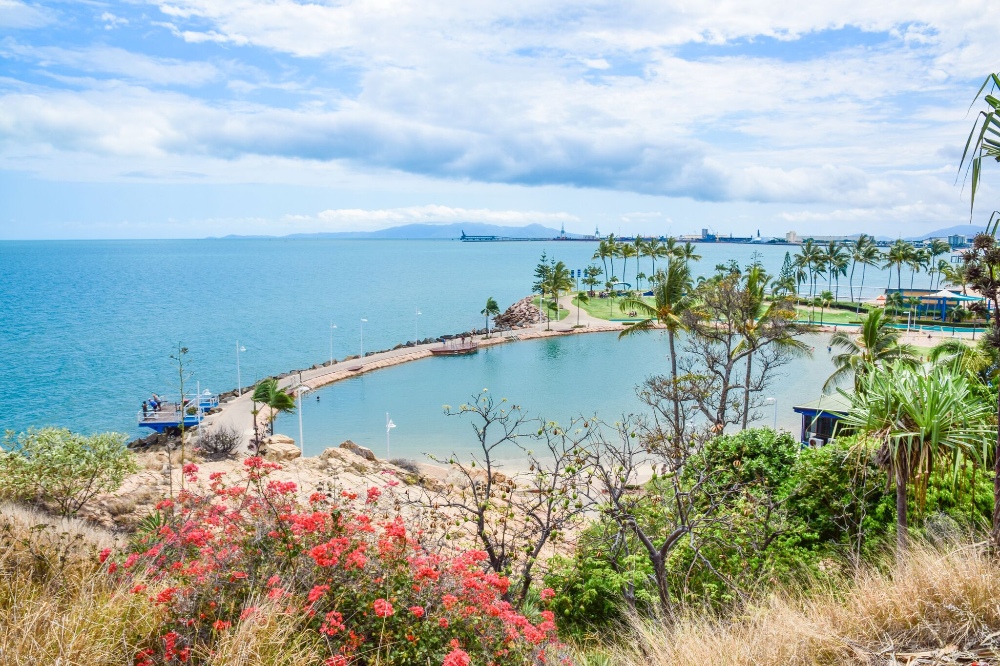
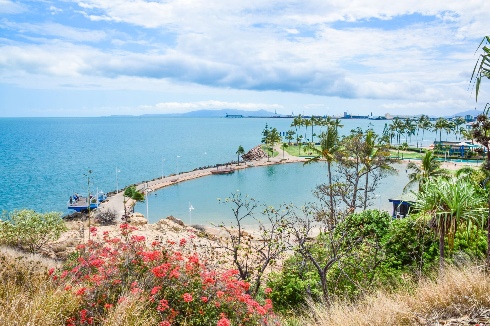
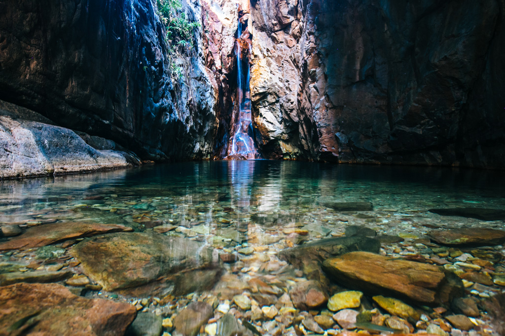
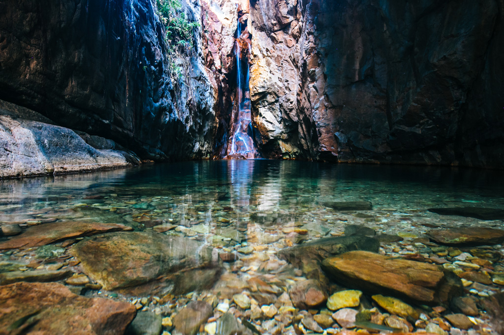

Beach
Australia, officially the Commonwealth of Australia, is a sovereign country comprising the mainland of the Australian continent, the island of Tasmania, and numerous smaller islands. It is the largest country in Oceania and the world's sixth-largest country by total area.


 



 


 
